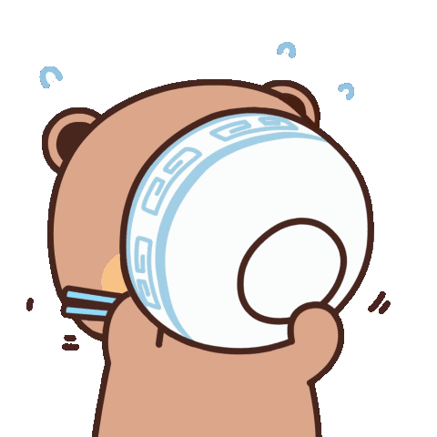

Nutrition Tips
- Eat the Rainbow: Pack your plate with colorful fruits and veggies.
They're like super-fuel for your body and brain!
- Snack Smart: Choose nuts, fruits,
or yogurt over junk food to stay energized and focused.
- Stay Hydrated: Water is your best friend! Skip the sugary drinks
and stay refreshed.
- Go Whole: Whole grains and lean proteins keep you strong
and active.
- Less Sugar, More Power: Too much sugar slows you down.
Choose healthier options for a natural energy boost.

Exercise Tips
- Get Moving Every Day: Aim for at least 30 minutes of fun activities dancing, biking,
or playing sports. Anything that keeps you moving!
- Mix It Up: Try new things like swimming, hiking, or even
skateboarding.
Switching activities keeps it fun and works different muscles.
- Stretch It Out: Do some stretches in the morning
or after playing to stay flexible and avoid injuries.
- Play With Friends: Turn exercise into a game!
Challenge friends to a race or play a team sport to make fitness more fun.
- Limit Screen Time: Balance screen time with active play.
For every hour of screen time, try to move for at least 15 minutes.
Common Health Issues
- Obesity: Eating too much junk food and not enough exercise can lead to unhealthy weight gain.
- Screen Strain: Too much time on screens can cause eye strain, headaches, and poor posture.
- Sleep Problems: Staying up late on devices can mess with sleep schedules, leading to tiredness and trouble focusing.
- Allergies: Food allergies and seasonal allergies are common, causing symptoms like sneezing, rashes, or stomachaches.
- Mental Health: Anxiety, stress, and depression are becoming more common, often linked to school pressure or social media.